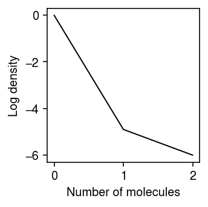

Iterative refinement of NPMLE grid in ashr
Table of Contents
Introduction
The NPMLE (Kiefer and Wolfowitz 1956) is
\begin{equation} \arg\max_g \sum_{i=1}^n \int_0^{\infty} \operatorname{Poisson}(x_i; s_i \lambda_i)\,dg(\lambda_i) \end{equation}where the maximum is taken over the space of all distributions \(g\). Theorem 2 of Koenker and Mizera states if the likelihood is the standard normal density, then the optimum \(g^*\) is an atomic probability measure of not more than \(n\) atoms. (We assume that this is still for true for the Poisson density, but have not proven it.)
In practice, we approximate this measure using a mixture of tiled uniform segments, and solve
\begin{equation} \arg\max_{\pi} \sum_{i=1}^n \int_0^{\infty} \operatorname{Poisson}(x_i; s_i \lambda_i) \prod_{k=1}^{K} \pi_k \operatorname{Uniform}(\lambda_i; (k - 1)a, ka)\,d\lambda_i \end{equation}A fundamental challenge in applying this approach to all genes in a variety of data sets is that the size of the grid (i.e., the size of the convex optimization problem) depends on the range of the data. In practice, this means that a single fixed choice of step size can either prove to be inadequate to fit variation at some genes, or require prohibitive memory to represent. To address this issue, we developed an iterative algorithm to refine the grid. The intuition behind our iterative refinement scheme is that if some segment \(k\) overlaps atoms of \(g^*\), then the corresponding \(\pi_k^* > 0\); otherwise \(\pi_k^* = 0\). Then, we can discard segments for which \(\pi_k^* = 0\), and divide the remaining segments into smaller segments, and this property should still hold.
Formally, given an initial grid size \(K\):
- Let \(\lambda_i = x_i / s_i\), initialize the step size \(a = \max(\lambda_i) / K\)
- Initialize \(\mathcal{G}\) to be the set of mixtures distributions over uniform segments \(\{(ka, (k + 1)a) \mid 0 \leq k < K\}\)
- Initialize the current solution \(\hat{g} = \operatorname{EBPM}(x_1, \ldots, x_n, s_1, \ldots, s_n, \mathcal{G})\)
- Until the improvement in log likelihood falls below a threshold (or
maximum number of updates are exceeded)
- Update \(\mathcal{G} = \{(a_k, (b_k - a_k) / 2), ((b_k - a_k) / 2, b_k) \mid (a_k, b_k) \in \mathcal{G}, \pi_k > \mathrm{threshold}\}\)
- Update the current solution \(\hat{g} = \operatorname{EBPM}(x_1, \ldots, x_n, s_1, \ldots, s_n, \mathcal{G})\)
Here, we investigate cases where this scheme fails.
Setup
import anndata import collections import numpy as np import os import pandas as pd import scanpy as sc import scmodes
import rpy2.robjects.packages import rpy2.robjects.pandas2ri rpy2.robjects.pandas2ri.activate() ashr = rpy2.robjects.packages.importr('ashr')
%matplotlib inline %config InlineBackend.figure_formats = set(['retina'])
import colorcet import matplotlib.pyplot as plt plt.rcParams['figure.facecolor'] = 'w' plt.rcParams['font.family'] = 'Nimbus Sans'
Results
Control data example
Look at the case where (the improvement over point mass expression model of) the NPMLE expression model appears worse than the unimodal expression model. Plot the log density of the observed data.
dat = data['chromium2']() x = dat[:,dat.var['index'] == 'ERCC-00031'].X.A.ravel() s = dat.X.sum(axis=1).A.ravel() lam = x / s
plt.clf() plt.gcf().set_size_inches(2.5, 2.5) n, h = np.histogram(x, np.arange(x.max() + 2)) plt.plot(h[:-1], np.log(n) - np.log(x.shape[0]), c='k', lw=1) plt.xlabel('Number of molecules') plt.ylabel('Log density') plt.tight_layout()

Report the log likelihood achieved by different initial grids.
pd.Series({
k: scmodes.ebpm.ebpm_npmle(x, s, K=k, max_grid_updates=30, tol=1e-7).rx2('loglik')[0]
for k in (32, 64, 128, 256, 512)
})
32 -132.714344 64 -132.714344 128 -128.090748 256 -132.714344 512 -124.649173 dtype: float64
Trace the refinement of the grid starting from \(K = 256\) and \(K = 512\).
max_grid_updates = 30 thresh = 1e-7 tol = 1e-5 res = collections.defaultdict(list) for init in (256, 512): K = init grid = np.linspace(0, lam.max(), K + 1) fit = ashr.ash_pois( pd.Series(x), pd.Series(s), g=ashr.unimix(pd.Series(np.ones(K) / K), pd.Series(grid[:-1]), pd.Series(grid[1:]))) obj = fit.rx2('loglik')[0] for i in range(max_grid_updates): print(f'init={init} iteration={i} obj={obj}') g = np.array(fit.rx2('fitted_g')) g = g[:,g[0] > thresh] res[init].append(g) grid = np.linspace(g[1], g[2], 3) a = pd.Series(grid[:-1,:].ravel(order='F')) b = pd.Series(grid[1:,:].ravel(order='F')) pi = pd.Series((np.tile(g[0], (2, 1)) / 2).ravel(order='F')) if i == 0: print(np.vstack((pi, a, b))) fit1 = ashr.ash_pois(pd.Series(x), pd.Series(s), g=ashr.unimix(pi, a, b)) update = fit1.rx2('loglik')[0] if update < obj: raise RuntimeError('loglik decreased') elif update - obj < tol: g = np.array(fit1.rx2('fitted_g')) g = g[:,g[0] > thresh] res[init].append(g) break else: obj = update fit = fit1
plt.clf() fig, ax = plt.subplots(1, 2, sharey=True) fig.set_size_inches(4, 2.5) for k, a in zip(res, ax): for i, g in enumerate(res[k]): xx = g[1:].ravel(order='F') yy = np.zeros(xx.shape[0]) for j in np.arange(xx.shape[0]): if j % 2: yy[j] = yy[j - 1] + g[0][j // 2] elif j > 0: yy[j] = yy[j - 1] a.plot(xx, yy, c=colorcet.cm['bmy'](i / len(res[k])), marker='.', ms=4, lw=1) a.set_title(f'Initial $K$ = {k}') a.set_xlim(0, 4e-5) a.set_ylim(0, 1) ax[0].set_ylabel('CDF') a = fig.add_subplot(111, frameon=False, xticks=[], yticks=[]) a.set_xlabel('Latent gene expression', labelpad=32) fig.tight_layout()
Clearly, even the first dividing step leads to the wrong solution. Look more closely at the dividing step.
init = dict() for K in (256, 512): grid = np.linspace(0, lam.max(), K + 1) init[K] = ashr.ash_pois(pd.Series(x), pd.Series(s), g=ashr.unimix(pd.Series(np.ones(K) / K), pd.Series(grid[:-1]), pd.Series(grid[1:])))
plt.clf() fig, ax = plt.subplots(1, 2, sharey=True) fig.set_size_inches(4, 2.5) for k, a in zip(init, ax): g = np.array(init[k].rx2('fitted_g')) xx = g[1:].ravel(order='F') yy = np.zeros(xx.shape[0]) for j in np.arange(xx.shape[0]): if j % 2: yy[j] = yy[j - 1] + g[0][j // 2] elif j > 0: yy[j] = yy[j - 1] a.plot(xx, yy, c=colorcet.cm['bmy'](i / len(res[k])), marker='.', ms=4, lw=1) a.set_title(f'$K$ = {k}') a.set_xlim(0, 4e-5) a.set_ylim(0, 1) ax[0].set_ylabel('CDF') a = fig.add_subplot(111, frameon=False, xticks=[], yticks=[]) a.set_xlabel('Latent gene expression', labelpad=32) fig.tight_layout()

First, look at the segments with non-trivial mixture weight in the \(K=512\) initialization.
g = np.array(init[512].rx2('fitted_g')) g[:,g[0] > thresh]
array([[9.94031230e-01, 5.54471208e-03, 4.24058253e-04], [0.00000000e+00, 7.60198382e-04, 4.79509748e-03], [1.16953597e-05, 7.71893741e-04, 4.80679284e-03]])
Next, look at the segments with non-trivial mixture weight in the \(K=256\) initialization.
g = np.array(init[256].rx2('fitted_g')) g[:,g[0] > thresh]
array([[1.00000000e+00], [0.00000000e+00], [2.33907194e-05]])
Now, look at the result of dividing the segments with non-trivial mixture weight.
g = np.array(init[256].rx2('fitted_g')) g = g[:,g[0] > 1e-7] temp = np.linspace(g[1], g[2], 3) a = pd.Series(temp[:-1,:].ravel(order='F')) b = pd.Series(temp[1:,:].ravel(order='F')) pi = pd.Series((np.tile(g[0], (2, 1)) / 2).ravel(order='F')) temp = ashr.ash_pois(pd.Series(x), pd.Series(s), g=ashr.unimix(pd.Series(pi), pd.Series(a), pd.Series(b))) g = np.array(temp.rx2('fitted_g')) g[:,g[0] > thresh]
array([[7.31373678e-01, 2.68626322e-01], [0.00000000e+00, 1.16953597e-05], [1.16953597e-05, 2.33907194e-05]])
This example appears to contradict our intuition that the solution should have density wherever there was some underlying point mass, because the \(K=512\) solution put non-trivial weight on some segment that did not get non-trivial weight in the \(K=256\) solution.